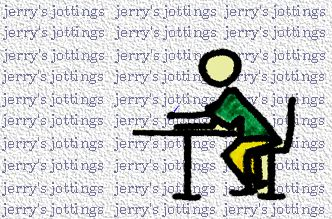

|
Jerry's Jottings archive 1 |

Jerrys Jottings Archive Page -
entries up to 31st August 1995
Thanks at this time go out to loads of people. Not least of which must be the DFM crew who have contributed greatly to the lack of cBuzz updates in the recent past. Plus of course the big thanks to Michael Eavis, without whose farm many of us would not make it through the year. (and again further reason for lack of cBuzz updates!!)
Enormous hugs and thanks to the following list of people (and in no particular order - it's just the way my brain thinks) Curtis Child, 1016, Grant, Al, Steve North, Dougal, Charlie, Jo, Dave, Phil, Max, Simon, Atlanta, Chris, Kate, Fay, Ces, Sarah, Rudi, Adele, Graham, Positive Toby, Ian (The Joint), Shreddie, Martina, Jim 'BOB', BOB (can anyone confirm that they've just called a newly discovered comet 'Hail Bob" or something like that?) of whom the sun, beach & partying have necessitated much slack and the ultimate reason for the lack of cBuzz updates!!.
More hugs and thanks to Zeb, Martin (Bone Idol) - who has provided me with the ultimate in cures for a broken heart!, Derek (Upfront) for not inviting his old mate(s) to the barbecue, all the people on the West Pier for finally doing what so many acquaintances at so many hazy occasions have threatened to do - Squat the bloody thing. But much attention should also be paid as to why this lot are there. Necessity borne out of a lack of homes and the reality that in creating such a visible underclass the masses will continually massage the capitalist machine for fear of sinking lower - whoops, a little rant when I meant to say DO SOMETHING to stop this rot of homelessness. And a message to the occupiers - chill out and respect those that wish to actively support you, you do not now own the pier (that's for the capitalists).
Well, I' m sure there must be more people to thank but they can wait for the next update. I could use that as a punchline (Roger McGough style poem)
date: 22nd August 1995
Well it's been a busy period for me; running around trying to get info. for this website. Record shops are really useless in putting their charts together (you know who you are) and as for the bands.....just keep checking the pages to see how well I'm doing.
What about this weather - it's a real distraction for me as when I'm not doing the work for this website I often help out a friend in his surf shop Bone Idol (can I have credit on those slaps now?), which is right on the beach. And when I'm not there I know exactly what the view is like, can't help thinking about it and, yep you've guessed, I end up down there! And that is why the progress and development of cBuzz has been somewhat stilted in the recent past. I really want some bad weather so I can tuck myself in with my MAC for a week or two or three....
But not before this Bank Holiday weekend where a truly great friend of mine Rudi shall be wedding his wonderful partner Adeline in Luxembourg where they now live (Brighton has not been the same since they left) - I shall be out there and it depends on how long it takes to consume all the food and alcohol before I can update cBuzz again. Anyhow MASSIVE Internet congratulations to you both; even though the usual cBuzz policy on marriage is......... don't. (well there is always the taxman - to be discussed at a later date)
Last Saturday Slack & MuffleWuffle held a free party in Newhaven (just along the coast) and a great time was had
by all, I missed it due to parental committments, but can often be found at the most happening of happening
parties. And on the subject of parties it can not be left unsaid that there has been quite a bit of shit going
down at the established party venues of Ovingdean and Shoreham. London daytripping 'heavies' think that it's their
divine right to muscle in on the set-ups being put together. Christian Vogel was threatened off the decks at
Shoreham a few weeks back and the music that replaced him was handbag house. For fucks sake if you want that type
of music and you've got that type of attitude get your own sound together and fuck off with it.
Following the
Brighton Festival of Freedom on 5th August the Energised crew organised a freebie at Ovingdean - this was
disrupted by a London gang (armed) who wanted Energised to give money to them to continue the party. Energised
decided to de-rig and thus a handful of thugs ruined the enjoyment of about 2000 people. We don't need this type
of attitude.
date: 31st August 1995
The last day of August - means that winter isn't too far away. I've just returned from Luxembourg where a drunken occasion was had by one and all. Managed to adequately represent the British contingent as one of the last dozen to hit the sack. For your information the last remaining partyers were the groom (German), the brides father (Luxemburger - is that right?) and the brides sister, brother-in-law and one other Luxemburger - a truly European representation!!!
On returning to Brighton I went to the Connie Miranda Carnival Bonanza @ the Concorde, presented by Connie Dobbs. This free party featured DJs Nicki, Marcus and D-Jay and the delightful carnival costumes of the hosts was matched only by the fresh fruit served to us party people. Look out for the next presentation from Connie Dobbs as the queues for the Concorde on Monday will mean that the next one will equally be as popular.
On Wednesday I attended the opening of Tripping The Light Fantastic @ The Prince George, Trafalgar Street, a exhibition of the images (photos) of s. fallon griffiths (Griff) which offer a portrait of many aspects of Brighton. With dj magnus playing the tunes the evening was nice n' chilled. Check the photos out @ Brighton's foremost vegetarian pub.
A quick plug for what promises to be an excellent night out this weekend - Lobe, the local funckty humpty beats outfit (Impact's description) release their debut single (Doin It) with a live performance @ The Concorde this Saturday (2nd Sept). Positive Sounds will also be there with their system and rest assured Lobe will have you dancing the night out. @ only �4/3.50 yould be daft not to.